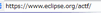
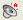
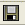
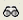
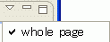

: The reaching time for the element is shorter than or equal to 30 seconds.
: The reaching time for the element is shorter than or equal to 30 seconds.
 : The reaching time for the element is longer than 30 seconds, but shorter than or equal to 90 seconds (the default maximum acceptable reaching time).
: The reaching time for the element is longer than 30 seconds, but shorter than or equal to 90 seconds (the default maximum acceptable reaching time).
The ACTF Visualization Feature has three menus, which are described in the following paragraphs.
| Back and Forward | Click these buttons to navigate among webpages. | |
| Refresh | Click this button to reload the current document. | |
| Stop | Click this button to stop loading a document. | |
| Title bar | Shows the title of the target page. | |
| Address bar |  | Contains the URL or file name of the webpage being analyzed. By double-clicking inside the address bar or by pressing Alt+D, a new URL can be entered into the address bar. |
| Go | Click this button to load the specified page. |
When the blind view is selected, the Visualization View is opened, which includes the following buttons, interactive elements, and icons.
| Visualize |  | Click this button to open the blind usability visualize function and the problem detector with the current settings. |
| Settings | Click this button to open the Blind Usability Visualization preference page, which controls the voice browser output mode and the layout mode (including reaching time, accessible tags, and table structure). | |
| Save |  | Click this button to open the Save as dialog box and save a report file. The report file is a CSV format. By selecting "Save HTML Report" option, an HTML document will be saved with CSV report. |
| ID/CSS | Click this button to open the ID/AccessKey/Class/CSS viewer panel, which displays information on attributes (ID, AccessKey, and Class) of elements and information on the Cascading Style Sheets (CSS) applied to the target page. |
The balloon messages and icons follow the movement of the mouse pointer and show the exact reaching time for the indicated element. When the mouse pointer is placed over an accessible tag, the balloon message also indicates the tag name.
The balloon icon indicates acceptability of the reaching time.
: The reaching time for the element is shorter than or equal to 30 seconds.
: The reaching time for the element is longer than 30 seconds, but shorter than or equal to 90 seconds (the default maximum acceptable reaching time).
The balloon messages and icons have two modes. If you place the cursor in the Visualization View and click, the messages and icons remain at the position where the mouse click occurred (stationary mode). Click again in the Visualization View if you want the messages and icon to move and follow the mouse pointer (active mode).
Intra-page link () and intra-page link destination () icons: When an intra-page link icon is clicked, an arrow, which is formed with red circles, appears between the source and the destination of the intra-page link. The arrow can be removed by clicking the icon again.
The balloon messages and icons and the arrows of the intra-page links can be controlled by using the icons on the Control panel.
 ): Click this button to make the balloon active (that is, it follows the mouse pointer).
): Click this button to make the balloon active (that is, it follows the mouse pointer).
 ): Click this button to show all of the arrows for intra-page links in the target page.
): Click this button to show all of the arrows for intra-page links in the target page.
When the low vision view is selected, the Simulation View is opened next to the ACTF Browser Editor. It includes the following buttons and check boxes:
| Simulate |  | Click this button to start the low vision simulator and the problem detector with the current settings. The current settings status is displayed in the status bar. |
| Settings | Click this button to open the Low Vision Simulation preference page, to set the eyesight, color vision deficiency, and crystalline lens transparency parameters that ACTF Low Vision Simulation uses when checking webpages. | |
| Save | Click this button to open the "Save as" dialog box and save the report file. The report file is an HTML document and can be read by using a Web browser. | |
| Whole page check box |  | When this check box is selected, ACTF Low Vision Simulation checks the entire target webpage, even if only a portion of the page is visible in the browser and the page consists of multiple frames of HTML documents. If the check box is cleared, only the displayed portion of the page is checked. |
By default, the Line View pane appears in the Detailed Report View of the bottom row. The column heads differ slightly depending on the active tab.
 | This icon appears with some other icon. The corresponding element can be highlighted in the Visualization View by selecting this line. |
| This item is an accessibility problem automatically detected. | |
| This item is probably accessibility problem. | |
 |
This item requires user confirmation. |
| This item requires human check based on test procedure. |
: This icon appears with some other icon.
The corresponding element can be highlighted in the Simulation View by selecting this line.
 : This problem is related to the colors of the corresponding element.
: This problem is related to the colors of the corresponding element.
This area provides the target page's overall rating for accessibility and usability.
Page rating: The radar chart shows the target page's rating in terms of Perceivable, Operable, Understandable and Robust. The overall rating is based on the number of problems found on the page.
Problem map icon: Indicates the position of the problems on the page. The overall rating above the graphic is based on the number of problems and the severity values of the problems on the page.